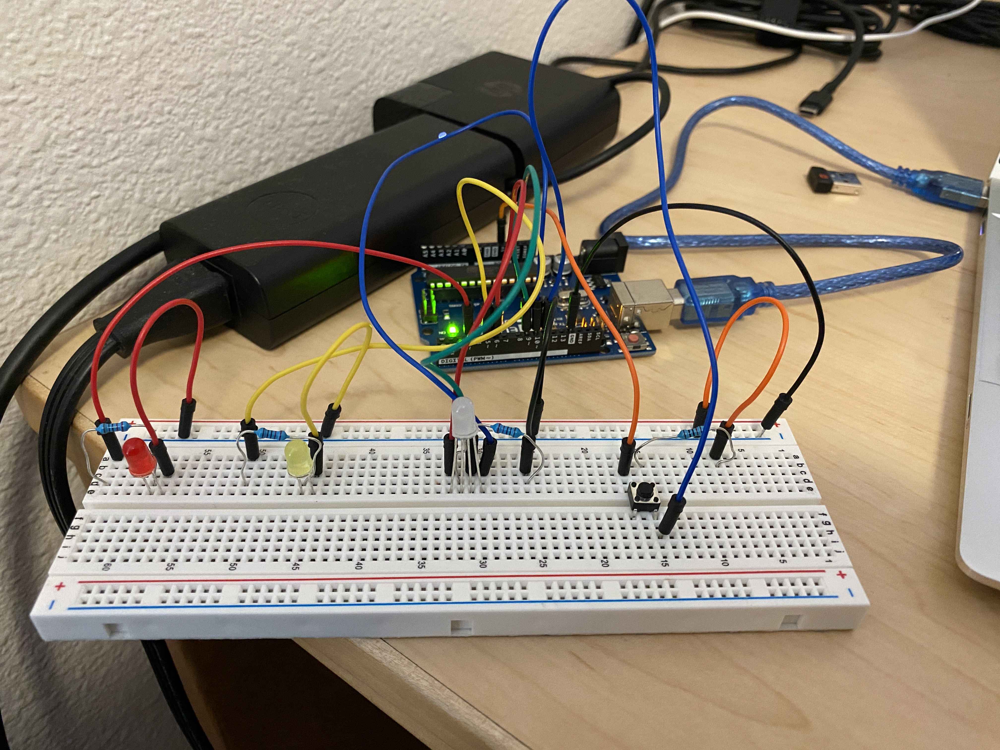

Yuming's Assignment 2!
This is the circuit that I built with three LEDs and a button. I picked red, yellow because they have the same voltage drop and the tricolor LED because I wanted to make a purple light.
These are my calculations and schematics. I picked 220 ohm resistors because it was the lowest resistor that I had above the calculations for the 3 LEDS and I used a 10k resistor for the button so that all the electrons will flow through the button to ground.

This gif shows that every time the button is pressed, the 3 LEDS fade on and off sequentially.
Here is my Arduino code:
// the setup routine runs once when you press reset:
void setup() {
Serial.begin(9600);
pinMode(3, OUTPUT); // declare pin 3 to be an output, corresponds to red
pinMode(5, OUTPUT); // declare pin 5 to be an output, corresponds to yellow
pinMode(6, OUTPUT); // declare pin 6 to be an output, corresponds to red tricolor led
pinMode(9, OUTPUT); // declare pin 9 to be an output, corresponds to green tricolor led
pinMode(10, OUTPUT); // declare pin 10 to be an output, corresponds to blue tricolor led
pinMode(11, INPUT); // declare pin 11 to be an input, corresponds to button
}
// the loop function runs over and over again forever
void loop (){
int reading = digitalRead(11); // gets input from button
// if button is pressed, each LED will fade on and off sequentially
if (reading == HIGH) {
// red LED fades on
for(int i = 0; i < 256;i++){
analogWrite(3, i);
delay(10); // wait 10 ms to see brightening effect
}
// red LED fades off
for(int i = 255; i >= 0;i--){
analogWrite(3, i);
delay(10); // wait 10 ms to see dimming effect
}
// yellow LED fades on
for(int i = 0; i < 256;i++){
analogWrite(5, i);
delay(10); // wait 10 ms to see brightening effect
}
// yellow LED fades off
for(int i = 255; i >= 0;i--){
analogWrite(5, i);
delay(10); // wait 10 ms to see dimming effect
}
// tricolor LED fades on with purple color
for(int i = 0; i < 256;i++){
analogWrite(6, i);
analogWrite(10, i);
delay(10); // wait 10 ms to see brightening effect
}
// tricolor LED fades off with purple color
for(int i = 255; i >= 0;i--){
analogWrite(6, i);
analogWrite(10, i);
delay(10); // wait 10 ms to see dimming effect
}
} else { // if button is not pressed, the LEDs stay off
digitalWrite(3, LOW);
digitalWrite(5, LOW);
digitalWrite(6, LOW);
digitalWrite(9, LOW);
digitalWrite(10, LOW);
}
}